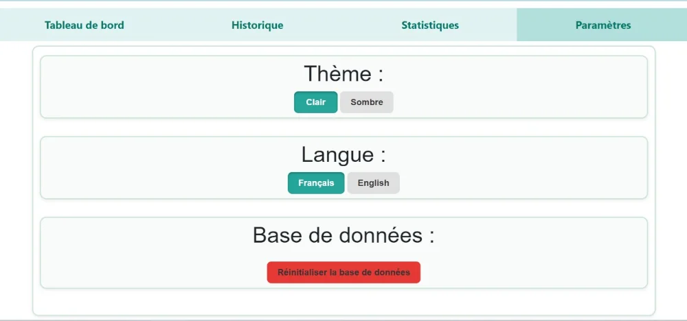
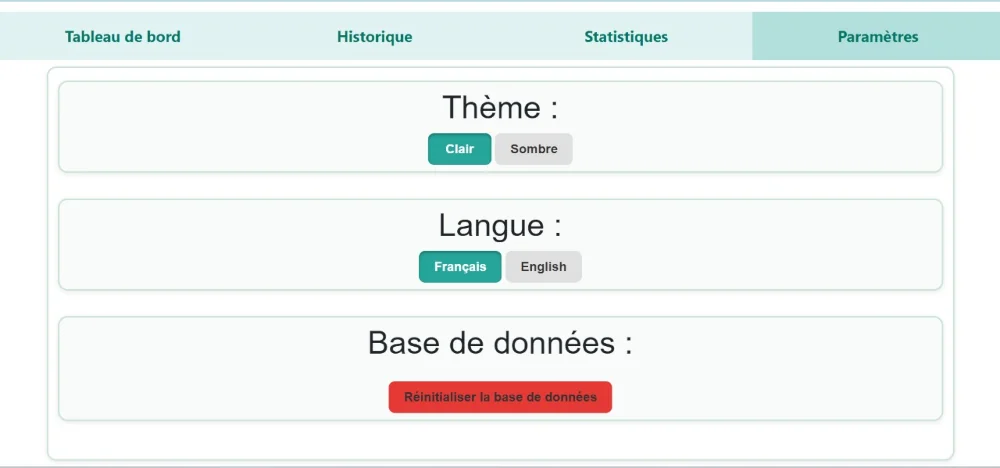

Partie informatique - Système de convoyeur
1. Détection intelligente et automatisation
La détection intelligente repose sur un système de reconnaissance de couleur embarqué utilisant le capteur ColorPAL, piloté par une carte Arduino Nano. Ce système a pour mission d’identifier la couleur d’un objet (représentant un type de déchet) à son passage sur un tapis convoyeur automatisé.
-
Détails
- Initialement, le convoyeur est à l'arrêt.
- Un objet(cube) est posé sur le tapis.
- Le capteur de distance détecte l'objet et le convoyeur démarre grâce au moteur.
- Lorsque l'objet passe dans la zone de détection, le convoyeur s'arrête et le capteur de couleur s'active pour identifier la couleur de l'objet.
- Cette couleur, codées sous forme de lettres majuscules (R, G, B, Y, U), est envoyée au serveur Python pour être stockée et publiée sur l'interface web.
- La led RGB s'allume suivant la couleur detectée.
- Le convoyeur redémarre et ne s'arrête que lorsque l'objet est en bout de course, determiné par un capteur infrarouge à la fin du convoyeur.
code_convoyeur.ino
// boutons marche arrêt & urgence
#define pinStart 7
#define pinStop 2
// Contrôle moteur
#define pinMotor 3
// Définir les broches du capteur de couleur
#define LED_R 9
#define LED_G 10
#define LED_B 11
// capteur de couleur
#define S0 14
#define S1 15
#define S2 16
#define S3 17
#define Out 18
// capteur infrarouge
#define infraredSensor 19
// capteur Ultrason
#define trigPin 5
#define echoPin 6
unsigned int redFrequency = 0, greenFrequency = 0, blueFrequency = 0, infraredValue = 0;
const int nbEchantillon = 5;
unsigned long distance = 0, lastInterrupt = 0;
char color_detected = 'U';
bool finTapis = true, been_detected = false;
volatile bool is_on = false;
void setup()
{
// Moteur
pinMode(pinMotor, OUTPUT);
analogWrite(pinMotor, 0); // arrêt initial
// LED
pinMode(LED_R, OUTPUT);
pinMode(LED_G, OUTPUT);
pinMode(LED_B, OUTPUT);
setColor(0, 0, 0); // blanc
// Ultrason
pinMode(trigPin, OUTPUT);
pinMode(echoPin, INPUT);
// Infrarouge
pinMode(infraredSensor, INPUT);
// capteur de couleur
pinMode(S0, OUTPUT);
pinMode(S1, OUTPUT);
pinMode(S2, OUTPUT);
pinMode(S3, OUTPUT);
pinMode(Out, INPUT);
// Configurer l'échelle de fréquence à 100%
digitalWrite(S0, HIGH);
digitalWrite(S1, HIGH);
// boutons poussoirs
pinMode(pinStart, INPUT_PULLUP);
pinMode(pinStop, INPUT_PULLUP);
attachInterrupt(digitalPinToInterrupt(pinStop), interrupt_routine, FALLING);
Serial.begin(9600);
delay(100);
Serial.println("OFF");
}
void loop()
{
if (!is_on)
{
analogWrite(pinMotor, 0);
while (digitalRead(pinStart))
{
// clignotement de la led pour indiquer que le système est en stop
setColor(255, 165, 0);
delay(400); // pour avoir un clignotement réaliste et une réactivité satisfaisante
setColor(0, 0, 0);
delay(400);
}
is_on = true;
Serial.println("ON");
}
else
{
// distance de l'objet par rapport au capteur
distance = getDistance();
infraredValue = digitalRead(infraredSensor);
if (infraredValue)
{
finTapis = true;
analogWrite(pinMotor, 0);
}
else if (distance < 50 || !finTapis)
{
// zone de détection de couleur
if (8 < distance && distance < 11 && !been_detected) //detection de couleur une seule fois
{
finTapis = false;
been_detected = true;
// arrêt du moteur
analogWrite(pinMotor, 0);
delay(500);
color_detected = getColor(); // detection de couleur
Serial.println(color_detected); // envoie de la couleur à l'interface
}
if((distance > 20 && been_detected)){
been_detected = false; // active la zone de detection une fois
}
analogWrite(pinMotor, 100);
delay(100);
}
else
{
// arrêt du moteur
analogWrite(pinMotor, 0);
}
}
}
void setColor(unsigned int red, unsigned int green, unsigned int blue)
{
red = map(red, 0, 255, 255, 0);
green = map(green, 0, 255, 255, 0);
blue = map(blue, 0, 255, 255, 0);
analogWrite(LED_R, red);
analogWrite(LED_G, green);
analogWrite(LED_B, blue);
}
void getFrequencyColor()
{
redFrequency = 0;
greenFrequency = 0;
blueFrequency = 0;
for (unsigned int i = 0; i < nbEchantillon; i++)
{
// Sélectionner filtre rouge
digitalWrite(S2, LOW);
digitalWrite(S3, LOW);
redFrequency += pulseIn(Out, LOW); // Mesure la frequence du rouge
// Sélectionner filtre vert
digitalWrite(S2, HIGH);
digitalWrite(S3, HIGH);
greenFrequency += pulseIn(Out, LOW); // Mesure la frequence du vert
// Sélectionner filtre bleu
digitalWrite(S2, LOW);
digitalWrite(S3, HIGH);
blueFrequency += pulseIn(Out, LOW); // Mesure la frequence du bleu
}
redFrequency /= nbEchantillon;
greenFrequency /= nbEchantillon;
blueFrequency /= nbEchantillon;
/*
// Afficher les valeurs pour la configuration
Serial.print("R:");
Serial.print(redFrequency);
Serial.print(" G:");
Serial.print(greenFrequency);
Serial.print("B:");
Serial.println(blueFrequency);
*/
}
char getColor()
{
setColor(0, 0, 0);
getFrequencyColor();
if (redFrequency > 25 && greenFrequency > 30 && blueFrequency > 25)
{
setColor(50, 50, 50);
return 'U'; // Pas de couleur détectée
}
if (redFrequency < 15)
{
int diffRG = greenFrequency - redFrequency; // Calculer la différence entre vert et rouge
if (diffRG < 5)
{
setColor(100, 100, 0); // jaune
return 'Y';
}
else if (diffRG >= 5)
{
setColor(100, 0, 0); // rouge
return 'R';
}
}
else if (greenFrequency < redFrequency && greenFrequency < blueFrequency && greenFrequency < 20)
{ // Si vert dominant et faible
setColor(0, 100, 0); // vert
return 'G';
}
else if (blueFrequency < redFrequency && blueFrequency < greenFrequency && blueFrequency < 20)
{
setColor(0, 0, 100); // bleu
return 'B';
}
else
{
setColor(50, 50, 50);
return 'U';
}
}
// Fonction pour lire la distance avec le capteur ultrason
long getDistance()
{
digitalWrite(trigPin, LOW);
delayMicroseconds(2);
digitalWrite(trigPin, HIGH);
delayMicroseconds(10);
digitalWrite(trigPin, LOW);
long duration = pulseIn(echoPin, HIGH);
long distance = (duration / 2.0) * 0.0344;
return distance;
}
void interrupt_routine()
{
unsigned long currentMillis = millis();
if (currentMillis - lastInterrupt > 50)
{ // anti-rebond de 50 ms
// arrêt moteur
analogWrite(pinMotor, 0);
is_on = false;
Serial.println("OFF");
}
}
NB: Les commentaires expliquent en détail le code.
2. Interface Web
L’interface web du projet Convoyeur Intelligent permet la visualisation en temps réel des données reçues du capteur de couleurs Arduino. Elle affiche les compteurs de déchets selon leur couleur (Rouge, Vert, Bleu, Jaune, Inconnu). L’interface facilite le suivi du tri des déchets automatisé sur le convoyeur.
Fonctionnalités principales
a. Tableau de bord
-
Informations sur le système:
- Etat du système(actif/inactif): permet de savoir si le système est en marche ou non.
- Taux de détection: permet un suivi du taux d'objet trié sans erreur(inconnu).
- Nombre total des déchets trié dans le système: donne une idée sur la quantité triée.
- Le dernier dechet tri: renseigne le dernier dechet par le système.
- Animation d'un convoyeur: permet une visualiser les objets entrant(avec leur couleur respective).
- Le nombre de dechets par catégorie:
- Visualisation représentative de chaque type de déchet.
- Visualisation en temps réel du nombre de déchets par catégorie.
b. Historiques des déchets
- Journal détaillé de toutes les détections d’objets triés, avec horodatage, type et couleur
- Permet de consulter les événements passés pour analyse ou vérification.
- Export de l'historique en fichier .csv pour analyse plus pousée.
c. Statistiques

- Affiche la repartition de chaque catégorie de déchets.
- Export des statistiques en fichier .csv pour des analyses.
- Export des statistiques en image pour des publications, ...
d. Paramètres
 

- Choix de thème: clair(par défaut)/sombre
- Choix de langue: Français(par défaut)/Anglais
- Réinitialisation de la base de données: supprimer l'ensemble des données
3. Architecture technique
Voici l'arborescence du dossier
- convoyeur_web
- __pycache
- data
- historique.json
- static
- script.js
- style.css
- tekbot_logo.webp
- trc.webp
- templates
- index.html
- venv
- app.py
a. Backend (Serveur Flask + SocketIO)
Nous utilisons python avec ces librairies.
- Connexion série avec l’Arduino(via serial) pour recevoir les données (lettres représentant couleurs, état du système(ON/OFF)).
- Traitement, mise à jour et enregistrement des données(via json, os, ...).
- Emission d’événements WebSocket(via flask, SocketIO) pour mise à jour instantanée côté client.
app.py
from flask import Flask, render_template, jsonify, request
from flask_socketio import SocketIO, emit
import threading
import time
from datetime import datetime
import json, os
from collections import Counter
import serial.tools.list_ports
app = Flask(__name__)
app.secret_key = "tekbot2025"
# Configuration SocketIO
socketio = SocketIO(app,
cors_allowed_origins="*",
async_mode="threading",
logger=False,
engineio_logger=False)
# Chemins
DATA_FOLDER = "data"
HISTORIQUE_PATH = os.path.join(DATA_FOLDER, "historique.json")
# Variables globales
state = "OFF"
COLOR = ["rouge", "jaune", "bleu", "vert", "inconnu"]
COULEUR_TYPE = {
"bleu": "recyclables",
"jaune": "plastiques",
"rouge": "dangereux",
"vert": "organiques",
"inconnu": "inconnu"
}
# Initialisation dossier et fichier
if not os.path.exists(DATA_FOLDER):
os.mkdir(DATA_FOLDER)
if not os.path.exists(HISTORIQUE_PATH):
with open(HISTORIQUE_PATH, "w") as f:
json.dump([], f)
# Chargement historique
try:
with open(HISTORIQUE_PATH, "r") as f:
historique = json.load(f)
except (json.JSONDecodeError, FileNotFoundError):
historique = []
with open(HISTORIQUE_PATH, "w") as f:
json.dump(historique, f)
# Sauvegarde d’un déchet dans l’historique
def save_historique(couleur):
type_dechet = COULEUR_TYPE.get(couleur.lower(), 'inconnu')
entry = {
"time": datetime.now().strftime("%Y-%m-%d %H:%M:%S"),
"type": type_dechet,
"color": couleur
}
historique.append(entry)
with open(HISTORIQUE_PATH, "w", encoding="utf-8") as f:
json.dump(historique, f, ensure_ascii=False, indent=2)
return entry
# Génère les données à transmettre
def generer_data():
counts = Counter(entry["color"] for entry in historique)
compteurs = {c: counts.get(c, 0) for c in COLOR}
total = sum(compteurs.values())
dernier = historique[-1]["color"] if historique else None
# Calcul du taux : proportion des couleurs détectées différentes de "inconnu"
inconnu_count = compteurs.get("inconnu", 0)
detected_count = total - inconnu_count
# taux = (detected_count/total)*100 if total > 0 else 0
taux = round((detected_count / total) * 100, 2) if total > 0 else 0
return {
"compteurs": compteurs,
"total": total,
"taux": taux,
"dernier": dernier,
"historique": historique,
"etat_systeme": state
}
# Envoie les données via WebSocket
def broadcast_data():
data = generer_data()
socketio.emit("update_data", data)
@app.route('/')
def index():
return render_template("index.html")
# Route pour lecture des données
@app.route('/data')
def get_data():
data = generer_data()
socketio.emit("update_data", data)
return jsonify(data)
# Route pour ajouter un déchet
@app.route('/add', methods=["POST"])
def add_dechet():
data = request.get_json()
couleur = data.get("type")
if couleur not in {"red", "yellow", "blue", "green", "inconnu"}:
return jsonify({"error": "Type invalide"}), 400
save_historique(couleur)
broadcast_data()
return jsonify({"success": True})
# Réinitialiser la base de données
@app.route('/reset', methods=["POST"])
def reset_data():
historique.clear()
with open(HISTORIQUE_PATH, "w") as f:
json.dump([], f)
broadcast_data()
return jsonify({"success": True})
@socketio.on('connect')
def handle_connect():
emit('update_data', generer_data())
arduino = None
arduino_connected = False
selected_port = None
def select_port():
global selected_port
ports = serial.tools.list_ports.comports()
ports_list = [port.device for port in ports]
if not ports_list:
print("Aucun port détecté.")
exit()
print("Ports disponibles :")
for port in ports:
print(str(port))
try:
choice = int(input("Select Com Port for arduino: "))
for i in range(len(ports_list)):
if(ports_list[i].startswith("COM" + str(choice))):
selected_port = "COM" + str(choice)
print(f"Selected port: {selected_port}")
break
if selected_port is None:
print("Port invalide.")
exit()
except ValueError:
print("Entrée invalide.")
exit()
def connect_arduino():
select_port()
global arduino, arduino_connected, selected_port
try:
arduino = serial.Serial(selected_port, 9600)
arduino_connected = True
print("Connexion Arduino réussie")
socketio.emit('notification', {'message': 'Arduino connecté'})
time.sleep(1)
except Exception as e:
print(f"Échec connexion Arduino: {e}")
arduino_connected = False
socketio.emit('notification', {
'message': f'Échec connexion Arduino: {e}'})
def lecture_arduino():
while arduino_connected:
if arduino.in_waiting:
try:
data = arduino.readline().decode().strip()
if not data:
continue
print(f"[Arduino] => {data}")
if data in ['R', 'G', 'B', 'Y', 'U']:
mapping = {"R": "rouge", "Y": "jaune", "B": "bleu", "G": "vert", "U": "inconnu"}
type_ = mapping[data]
save_historique(type_)
broadcast_data()
elif data in ["ON", "OFF"]:
global state
state = data
broadcast_data()
except Exception as e:
print(f"Erreur lecture Arduino: {e}")
time.sleep(0.5)
time.sleep(0.1)
# Lancement
if __name__ == '__main__':
connect_arduino()
if arduino_connected:
thread = threading.Thread(target=lecture_arduino)
thread.daemon = True
thread.start()
socketio.run(app, host='0.0.0.0', port=5000,
debug=False, allow_unsafe_werkzeug=True)
b. Frontend (HTML, CSS, JavaScript avec Socket.IO)
- Affichage dynamique des données reçues via WebSocket.
- Mises à jour en temps réel(avec temps de communication avec les différents éléments).
- Animation simple du convoyeur.
index.html
<!DOCTYPE html>
<html lang="fr">
<head>
<meta charset="UTF-8">
<title>Système de Tri Intelligent - B2MS</title>
<link rel="stylesheet" href="{{ url_for('static', filename='style.css') }}">
<link href="https://cdn.jsdelivr.net/npm/bootstrap@5.3.3/dist/css/bootstrap.min.css" rel="stylesheet">
<meta name="viewport" content="width=device-width, initial-scale=1">
</head>
<body>
<header>
<img class="left-logo" src="{{ url_for('static', filename='trc.webp') }}" alt="Logo gauche">
<div class="header-center">
<h1>Système de Tri Intelligent - Convoyeur</h1>
<h2>B2MS CleanTech</h2>
</div>
<img class="right-logo" src="{{ url_for('static', filename='tekbot_logo.webp') }}" height="10" alt="Logo droite">
</header>
<nav>
<button class="tab-btn active" data-target="dashboard">Tableau de bord</button>
<button class="tab-btn" data-target="historique">Historique</button>
<button class="tab-btn" data-target="statistiques">Statistiques</button>
<button class="tab-btn" data-target="parametres">Paramètres</button>
</nav>
<main>
<!-- Tableau de bord -->
<section id="dashboard" class="active">
<div class="dashboard-container">
<div class="left-column">
<div class="system-info">
<p><strong>État :</strong> <span id="etat-systeme">🔴 Inactif</span></p>
<p><strong>Total déchets traités :</strong> <span id="total-dechets">0</span></p>
<p><strong>Taux de detection :</strong> <span id="taux-detection">0%</span></p>
<p><strong>Dernier déchet détecté :</strong> <span id="dernier-dechet">N/A</span></p>
</div>
</div>
<div class="conveyor-wrapper">
<div class="conveyor-container">
<div class="belt">
<div id="pattern" class="pattern"></div>
</div>
<div id="detected-object" class="detected-object"></div>
</div>
</div>
</div>
<div class="tubes">
<div class="tube red">
<div class="icon">☣️</div>
<div>Dangereux</div>
<div class="count" id="count-red">0</div>
</div>
<div class="tube yellow">
<div class="icon">📦</div>
<div>Plastiques/Cartons</div>
<div class="count" id="count-yellow">0</div>
</div>
<div class="tube blue">
<div class="icon">♻️</div>
<div>Recyclables</div>
<div class="count" id="count-blue">0</div>
</div>
<div class="tube green">
<div class="icon">🍃</div>
<div>Biodégradables</div>
<div class="count" id="count-green">0</div>
</div>
</div>
</section>
<!-- Historique -->
<section id="historique">
<button id="exportBtn">Exporter CSV</button>
<table>
<thead>
<tr>
<th>Chronologie</th>
<th>Type</th>
<th>Couleur</th>
</tr>
</thead>
<tbody id="historyBody">
</tbody>
</table>
</section>
<!-- Statistiques -->
<section id="statistiques" class="container">
<div id="statsContainer">
<canvas id="pieChart"></canvas>
<button id="downloadChart">Télécharger Graphique</button>
<button id="exportStatsCsv">Exporter Statistiques CSV</button>
</div>
</section>
<!-- Paramètres -->
<section id="parametres" class="container">
<div id="theme-switcher" class="sub-container">
<h1>Thème :</h1>
<button id="lightThemeBtn" class="active">Clair</button>
<button id="darkThemeBtn">Sombre</button>
</div>
<div id="language-switcher" class="sub-container">
<h1>Langue :</h1>
<button id="frBtn" class="active">Français</button>
<button id="enBtn">English</button>
</div>
<div class=" sub-container">
<h1>Base de données :</h1>
<button id="resetCountersBtn">🔄 Réinitialiser</button>
</div>
</section>
</main>
<footer>
Copyright © 2025 Team B2MS CleanTech. All rights reserved.
</footer>
<canvas id="pieChart"></canvas>
<script src="https://cdn.jsdelivr.net/npm/chart.js"></script>
<script src="https://cdn.jsdelivr.net/npm/chartjs-plugin-datalabels"></script>
<script src="https://cdn.jsdelivr.net/npm/chartjs-plugin-datalabels@2"></script>
<script src="https://cdn.socket.io/4.7.2/socket.io.min.js"></script>
<script src="{{ url_for('static', filename='script.js') }}"></script>
</body>
</html>
style.css
@import url("https://fonts.googleapis.com/css2?family=Poppins:wght@400;500;600;700&display=swap");
:root {
--primary-color: #00796b;
--primary-color-dark: #009572;
--primary-color-under-ligne: #ffffff;
--text-dark: #0c0a09;
--text-light: #78716c;
--white: #ffffff;
--max-width: 1200px;
--redLight: #ff4c4c;
--yellowLight: #fbc02d;
--greenLight: #388e3c;
--blueLight: #1976d2;
--gris-clair: #f8f9fa;
--gris-fonce: #212529;
--noir: #000000;
--transition: all 0.3s ease;
}
* {
padding: 0;
margin: 0;
}
body {
font-family: 'Segoe UI', Tahoma, Geneva, Verdana, sans-serif;
background-color: #ffffff;
color: black;
line-height: 1.6;
}
/* Header */
header {
display: flex;
justify-content: space-between;
align-items: center;
padding: 0.5rem 1rem;
font-weight: bold;
font-size: 1.2rem;
background-color: #ffffff;
}
.header-center {
text-align: center;
flex-grow: 1;
}
.left-logo {
width: 15%;
height: auto;
margin-right: 1rem;
}
.right-logo {
width: 5%;
height: auto;
margin-left: 1rem;
}
header h1 {
color: var(--primary-color);
}
header h4 {
color: var(--primary-color);
}
.container {
border-radius: 12px;
max-width: 1000px;
align-items: center;
margin: auto;
width: 100%;
border: 2px solid #cce4d8;
background-color: var(--blanc);
padding: 1rem;
box-shadow: 0 2px 6px rgba(0,0,0,0.08);
margin-top: -0.5rem !important;
justify-content: center !important;
align-items: center !important;
}
.sub-container {
align-items: center;
border: 2px solid #cce4d8;
background-color: #f8fbfa;
padding: 0.5rem;
margin-bottom: 2rem;
border-radius: 12px;
box-shadow: 0 2px 6px rgba(0,0,0,0.08);
}
/* Nav */
nav {
display: flex;
background: #e0f2f1;
}
nav button {
flex: 1;
padding: 1rem;
background: #e0f2f1;
border: none;
border-top: none;
margin: 0;
outline: none;
color: #00796b;
cursor: pointer;
font-weight: bold;
font-size: 1.2rem;
transition: background 0.3s;
}
nav button.active,
nav button:hover {
background: #b2dfdb;
}
/* Main */
main {
padding: 1rem;
}
section {
display: none;
}
section.active {
display: block;
}
.dashboard-container {
display: grid;
grid-template-columns: 2fr 1fr;
gap: 1rem;
align-items: start;
}
.left-column {
display: flex;
flex-direction: column;
gap: 1rem;
}
.conveyor-wrapper {
display: flex;
justify-content: center;
margin: 1.5rem;
}
/* Bande animée du convoyeur */
.conveyor-container {
width: 300px;
height: 120px;
background-color: #f8fbfa;
color: #333;
border-radius: 12px;
box-shadow: 0 2px 6px rgba(0, 0, 0, 0.1);
position: relative;
overflow: hidden;
border-radius: 8px;
}
.belt {
position: absolute;
bottom: 0;
width: 100%;
height: 30px;
overflow: hidden;
}
.pattern {
width: 200%;
height: 100%;
background: linear-gradient(90deg, #777 25%, #bbb 50%, #777 75%);
background-size: 100px 30px;
/* animation: scrollBelt 6s linear infinite; */
}
.pattern.moving {
animation: scrollBelt 6s linear infinite;
}
@keyframes scrollBelt {
0% {
transform: translateX(0);
}
100% {
transform: translateX(-50%);
}
}
.detected-object {
width: 40px;
height: 40px;
border-radius: 4px;
position: absolute;
bottom: 30px;
left: 50%;
transform: translateX(-50%);
background-color: transparent;
opacity: 0;
pointer-events: none;
transition: background-color 0.3s ease, opacity 0.3s ease;
}
.detected-object.active {
opacity: 1;
}
.system-info {
display: grid;
grid-template-columns: 1fr 1fr;
gap: 1rem;
padding: 1.5rem;
margin: 1rem auto;
width: 100%;
background-color: #f8fbfa;
color: #333;
border-radius: 12px;
box-shadow: 0 2px 6px rgba(0, 0, 0, 0.1);
font-size: 1.2rem;
}
.system-info p {
margin: 0;
padding: 0.3rem 0;
}
.system-info strong {
color: #222;
}
.system-info span {
font-weight: bold;
color: #0b6f6a;
}
/* Dashboard tubes */
.tubes {
display: flex;
gap: 1rem;
margin-bottom: 2rem;
justify-content: center;
}
.tube {
flex: 1;
background: white;
border-radius: 8px;
padding: 1rem;
box-shadow: 0 2px 8px rgb(0 0 0 / 0.1);
text-align: center;
position: relative;
}
.tube .icon {
font-size: 3rem;
margin-bottom: 0.5rem;
}
.tube .count {
font-size: 2rem;
font-weight: bold;
}
.tube.red {
background: #ffdddd;
border: 2px solid #ff4c4c;
color: var(--redLight);
}
.tube.yellow {
background: #fff8cc;
border: 2px solid #ffcc00;
color: var(--yellowLight);
}
.tube.blue {
background: #ddeeff;
border: 2px solid #3399ff;
color: var(--blueLight);
}
.tube.green {
background: #ddffdd;
border: 2px solid #33cc33;
color: var(--greenLight);
}
/* Buttons général */
button {
margin-top: 1rem;
background: #26A69A;
color: white;
border: none;
padding: 0.5rem 1rem;
cursor: pointer;
border-radius: 4px;
font-weight: 600;
transition: background-color 0.3s;
}
button:hover {
background: #42A5F5;
}
/* Historique */
table {
width: 90%;
border-collapse: collapse;
margin-left: auto;
margin-right: auto;
margin-top: 1rem;
}
th,
td {
padding: 0.5rem;
border: 1px solid #ccc;
text-align: center;
}
th {
background: #eee;
}
/* Statistiques */
#statsContainer {
max-width: 400px;
margin: auto;
text-align: center;
}
#downloadChart{
margin-top: 1rem;
margin-bottom: 1rem
}
#pieChart {
max-width: 100%;
height: auto;
}
/* Paramètres */
#parametres {
text-align: center;
/* margin-top: 2rem; */
font-family: Arial, sans-serif;
}
/* Label-like buttons "Mode :", "Langue :" */
.text-btn {
background: none;
border: none;
cursor: default;
color: inherit;
font-weight: bold;
user-select: none;
font-size: 1.2rem;
padding: 0 0.5rem 0 0;
display: flex;
align-items: center;
}
/* Groupes de boutons (thème, langue) */
.theme-switcher,
.language-switcher {
display: flex;
justify-content: center;
align-items: center;
gap: 0.5rem;
margin: 1rem 0 1.5rem;
font-size: 1.1rem;
color: inherit;
}
#parametres button {
padding: 0.5rem 1.2rem;
border: none;
border-radius: 8px;
background-color: var(--theme-btn-bg, #e0e0e0);
color: var(--theme-btn-text, #333);
font-weight: 600;
cursor: pointer;
transition: background-color 0.3s ease, color 0.3s ease, box-shadow 0.3s ease;
font-size: 1rem;
user-select: none;
min-width: 80px;
}
#parametres button:hover:not(.active) {
background-color: var(--theme-btn-hover, #ccc);
color: var(--theme-btn-text-hover, #000);
box-shadow: 0 0 5px rgba(0, 0, 0, 0.2);
}
#parametres button.active {
background-color: var(--theme-btn-active, #26a69a);
color: var(--theme-btn-active-text, #fff);
cursor: default;
pointer-events: none;
box-shadow: inset 0 2px 4px rgba(0, 0, 0, 0.3);
}
/* Bouton réinitialiser compteurs */
#resetCountersBtn {
padding: 0.7rem 1.5rem;
font-size: 1.1rem;
background-color: #e53935 !important;
color: white;
border: none;
border-radius: 5px;
cursor: pointer;
transition: background-color 0.3s;
margin-top: 1rem;
}
#resetCountersBtn:hover {
background-color: #c62828 !important;
}
footer{
text-align: center;
font-size: 1.2rem;
}
/* Thème clair par défaut */
body.light-theme {
background: #f0f2f5;
color: #333;
}
/* Thème sombre */
body.dark-theme {
background: #121212;
color: #eee;
}
/* Ajustements mode sombre */
body.dark-theme header {
background: #222;
color: #fff;
}
body.dark-theme nav {
background: #333;
}
body.dark-theme nav button {
background: #333;
color: #bbb;
}
body.dark-theme nav button.active,
body.dark-theme nav button:hover {
background: #093d38;
color: white;
}
body.dark-theme .tube {
background: #222;
color: #eee;
box-shadow: 0 2px 8px rgb(255 255 255 / 0.1);
border-color: #555;
}
body.dark-theme .tube.red {
background: #1a0000;
color: #ff4c4c;
border-color: #ff4c4c;
box-shadow: inset 0 0 15px 5px #ff4c4c80;
}
body.dark-theme .tube.yellow {
background: #332a00;
color: #ffcc00;
border-color: #ffcc00;
box-shadow: inset 0 0 15px 5px #ffcc0080;
}
body.dark-theme .tube.blue {
background: #001a33;
color: #3399ff;
border-color: #3399ff;
box-shadow: inset 0 0 15px 5px #3399ff80;
}
body.dark-theme .tube.green {
background: #003300;
color: #33cc33;
border-color: #33cc33;
box-shadow: inset 0 0 15px 5px #33cc3380;
}
body.dark-theme th {
background: #2a2929;
}
body.dark-theme button {
background: #607D8B;
color: white;
}
body.dark-theme button:hover {
background: #455A64;
}
body.dark-theme #parametres button.active {
background-color: var(--theme-btn-active, #01655b);
}
body.dark-theme #resetCountersBtn {
background-color: #e53935 !important; /* rouge vif */
color: #fff;
box-shadow: 0 0 5px rgba(229, 57, 53, 0.3);
}
body.dark-theme #resetCountersBtn:hover {
background-color: #c62828 !important; /* rouge plus foncé */
color: #fff;
box-shadow: 0 0 8px rgba(198, 40, 40, 0.4);
}
body.dark-theme h {
color: #fff;
}
body.dark-theme .container {
border: 2px solid #2a2d34;
background-color: #1e1e1e;
box-shadow: 0 2px 8px rgba(255,255,255,0.05);
}
body.dark-theme .sub-container {
border: 2px solid #31353e;
background-color: #1e1f24;
box-shadow: 0 2px 8px rgba(255,255,255,0.05);
}
body.dark-theme .system-info {
background-color: #1e1e1e;
color: #ddd;
box-shadow: 0 2px 8px rgba(255, 255, 255, 0.05);
}
body.dark-theme .system-info strong {
color: #fff;
}
body.dark-theme .system-info span {
color: #90caf9; /* bleu clair pour contraster */
}
body.dark-theme .conveyor-container {
background-color: #1e1e1e;
color: #ddd;
box-shadow: 0 2px 8px rgba(255, 255, 255, 0.05);
}
/* Dashboard responsive : une seule colonne sous 768px */
@media (max-width: 768px) {
.dashboard-container {
grid-template-columns: 1fr;
}
.tubes {
flex-direction: column;
gap: 1rem;
}
.tube {
width: 100%;
}
.conveyor-container {
width: 100%;
height: 100px;
}
.detected-object {
width: 30px;
height: 30px;
}
table {
font-size: 0.85rem;
width: 100%;
}
th, td {
padding: 0.4rem;
}
#statsContainer {
max-width: 100%;
padding: 0 1rem;
}
.container,
.sub-container {
padding: 1rem;
margin: 1rem;
}
.system-info {
grid-template-columns: 1fr;
font-size: 1rem;
}
}
/* Header responsive sous 600px */
@media (max-width: 600px) {
header {
flex-direction: column;
text-align: center;
}
.left-logo,
.right-logo {
width: 50px;
margin: 0.5rem auto;
}
.header-center {
margin: 0.5rem 0;
}
nav {
flex-direction: column;
}
nav button {
font-size: 1rem;
padding: 0.8rem;
}
}
/* Paramètres responsive sous 500px */
@media (max-width: 500px) {
.theme-switcher,
.language-switcher {
flex-direction: column;
gap: 0.5rem;
}
#parametres button {
min-width: unset;
width: 100%;
}
}
script.js
let hasInitialized = false;
// Gestion des onglets
const tabs = document.querySelectorAll('.tab-btn');
const sections = document.querySelectorAll('main section');
const DELAI_ANIM = 2500;
// Données système
let systemActif = false;
let totalCount = 0;
const counts = {red: 0, yellow: 0, blue: 0, green: 0, inconnu: 0};
const countElems = {
red: document.getElementById('count-red'),
yellow: document.getElementById('count-yellow'),
blue: document.getElementById('count-blue'),
green: document.getElementById('count-green')
};
const totalElem = document.getElementById('total-dechets');
const dernierDechetElem = document.getElementById('dernier-dechet');
const etatElem = document.getElementById('etat-systeme');
const detectedObjectElem = document.getElementById('detected-object');
const conveyorState = document.getElementById('pattern');
const history = [];
let currentLang = localStorage.getItem('lang') || 'fr';
const translations = {
fr: {
modeLabel: "Thème :",
languageLabel: "Langue :",
resetBtn: "Réinitialiser la base de données",
exportBtn: "Exporter CSV",
downloadChart: "Télécharger Graphique",
exportStatsCsv: "Exporter Statistiques CSV",
tubes: {
red: "Dangereux",
yellow: "Plastiques/Cartons",
blue: "Recyclables",
green: "Biodégradables",
unknown: "Inconnu"
},
tabs: ["Tableau de bord", "Historique", "Statistiques", "Paramètres"],
title: "Système de Tri Intelligent - Convoyeur",
unknown: "Inconnu",
system: {
state: "État",
total: "Total déchets traités",
taux: "Taux de detection",
last: "Dernier déchet détecté",
on: "Actif",
off: "Inactif"
}
},
en: {
modeLabel: "Theme:",
languageLabel: "Language:",
resetBtn: "Reset Database",
exportBtn: "Export CSV",
downloadChart: "Download Chart",
exportStatsCsv: "Export Stats CSV",
tubes: {
red: "Hazardous",
yellow: "Plastics/Cartons",
blue: "Recyclables",
green: "Biodegradable",
unknown: "Unknown"
},
tabs: ["Dashboard", "History", "Statistics", "Settings"],
title: "Smart Sorting System - Conveyor",
unknown: "Unknown",
system: {
state: "State",
total: "Total Waste Processed",
taux: "Detection rate",
last: "Last Detected Waste",
on: "Active",
off: "Inactive"
}
}
};
function switchLang(lang) {
currentLang = lang;
localStorage.setItem('lang', lang);
// Traduction onglets
tabs.forEach((tab, idx) => {
tab.textContent = translations[lang].tabs[idx];
});
// Traduction tubes
document.querySelector('.tube.red div:nth-child(2)').textContent = translations[lang].tubes.red;
document.querySelector('.tube.yellow div:nth-child(2)').textContent = translations[lang].tubes.yellow;
document.querySelector('.tube.blue div:nth-child(2)').textContent = translations[lang].tubes.blue;
document.querySelector('.tube.green div:nth-child(2)').textContent = translations[lang].tubes.green;
// Autres traductions
document.querySelector('.header-center h1').textContent = translations[lang].title;
document.getElementById('resetCountersBtn').textContent = translations[lang].resetBtn;
document.getElementById('exportBtn').textContent = translations[lang].exportBtn;
document.getElementById('downloadChart').textContent = translations[lang].downloadChart;
document.getElementById('exportStatsCsv').textContent = translations[lang].exportStatsCsv;
// Labels mode et langue
document.querySelector("#theme-switcher h1").textContent = translations[lang].modeLabel;
document.querySelector("#language-switcher h1").textContent = translations[lang].languageLabel;
// System info labels
const systemLabels = document.querySelectorAll(".system-info p");
if (systemLabels.length >= 4) {
systemLabels[0].querySelector("strong").textContent = translations[lang].system.state + " :";
systemLabels[1].querySelector("strong").textContent = translations[lang].system.total + " :";
systemLabels[2].querySelector("strong").textContent = translations[lang].system.taux + " :";
systemLabels[3].querySelector("strong").textContent = translations[lang].system.last + " :";
}
updateChart();
updateSystemState(systemActif ? "ON" : "OFF");
}
tabs.forEach(tab => {
tab.addEventListener('click', () => {
tabs.forEach(t => t.classList.remove('active'));
tab.classList.add('active');
sections.forEach(s => s.classList.remove('active'));
document.getElementById(tab.dataset.target).classList.add('active');
});
});
// Thème
const lightThemeBtn = document.getElementById('lightThemeBtn');
const darkThemeBtn = document.getElementById('darkThemeBtn');
function applyTheme(theme) {
if (theme === 'dark') {
document.body.classList.add('dark-theme');
darkThemeBtn.classList.add('active');
lightThemeBtn.classList.remove('active');
} else {
document.body.classList.remove('dark-theme');
lightThemeBtn.classList.add('active');
darkThemeBtn.classList.remove('active');
}
localStorage.setItem('theme', theme);
}
lightThemeBtn.addEventListener('click', () => applyTheme('light'));
darkThemeBtn.addEventListener('click', () => applyTheme('dark'));
// Mise à jour état système
function updateSystemState(state) {
const lang = localStorage.getItem('lang') || 'fr';
const isOn = state === "ON";
systemActif = isOn;
etatElem.textContent = isOn
? "🟢 " + (lang === "fr" ? "Actif" : "Active")
: "🔴 " + (lang === "fr" ? "Inactif" : "Inactive");
etatElem.style.color = isOn ? "#27ae60" : "#e74c3c";
}
// Affichage le taux de detection du backend
function updateTaux(taux_) {
document.getElementById('taux-detection').textContent = (taux_ ? taux_ : 0) + '%';
}
// Normalise couleurs backend (fr) vers frontend (en)
function normalizeColor(color) {
const map = {
rouge: 'red',
jaune: 'yellow',
bleu: 'blue',
vert: 'green',
inconnu: 'unknown'
};
return map[color] || color;
}
// Met à jour compteurs et affichages depuis données serveur
function updateCountsAndHistory(data) {
// Remise à zéro compteurs locaux
for (const c of Object.keys(counts)) {
counts[c] = 0;
}
// Met à jour compteurs avec données normalisées
for (const [colorFR, count] of Object.entries(data.compteurs)) {
const colorEN = normalizeColor(colorFR);
counts[colorEN] = count;
if(countElems[colorEN]) countElems[colorEN].textContent = count;
}
totalCount = data.total || Object.values(counts).reduce((a,b) => a+b,0);
totalElem.textContent = totalCount;
if(data.dernier) {
const dernierNorm = normalizeColor(data.dernier);
dernierDechetElem.textContent = `${getTypeName(dernierNorm)}`;
}
// Mise à jour de l'historique local (prend les 20 derniers)
if (Array.isArray(data.historique)) {
history.length = 0; // vide
// Normalise et ajoute
data.historique.slice(-20).forEach(item => {
history.push({
time: item.time,
type: normalizeColor(item.color || item.type),
color: normalizeColor(item.color || item.type)
});
});
}
updateHistoryTable();
updateChart();
}
// Récupère le nom traduit d’un type (couleur EN)
function getTypeName(type) {
const tubes = translations[currentLang].tubes;
return tubes[type] || translations[currentLang].unknown;
}
// Animation convoyeur
function conveyorAnimation(type) {
detectedObjectElem.className = 'detected-object active';
conveyorState.className = 'pattern moving';
detectedObjectElem.style.backgroundColor = getTubeColor(type);
setTimeout(() => {
detectedObjectElem.className = 'detected-object';
conveyorState.className = 'pattern';
detectedObjectElem.style.backgroundColor = 'transparent';
}, DELAI_ANIM);
}
// Couleurs tubes (frontend)
function getTubeColor(type) {
switch (type) {
case 'red': return '#ff4c4c';
case 'yellow': return '#fbc02d';
case 'blue': return '#1976d2';
case 'green': return '#388e3c';
default: return '#999'; //unknown
}
}
// Met à jour le tableau historique HTML
function updateHistoryTable() {
const tbody = document.getElementById('historyBody');
tbody.innerHTML = '';
history.slice().reverse().forEach(item => {
const tr = document.createElement('tr');
tr.innerHTML = `
<td>${item.time}</td>
<td>${getTypeName(item.type)}</td>
<td><span style="display:inline-block;width:16px;height:16px;background-color:${getTubeColor(item.color)};border-radius:4px;"></span></td>
`;
tbody.appendChild(tr);
});
}
// Export CSV historique
document.getElementById('exportBtn').addEventListener('click', () => {
let csv = 'Chronologie,Type,Couleur\n';
history.forEach(item => {
csv += `"${item.time}","${getTypeName(item.type)}","${item.color}"\n`;
});
downloadFile(csv, 'historique_tri.csv');
});
// Export CSV stats
document.getElementById('exportStatsCsv').addEventListener('click', () => {
let csv = 'Type,Quantité\n';
for (const [type, count] of Object.entries(counts)) {
csv += `"${getTypeName(type)}",${count}\n`;
}
downloadFile(csv, 'stats_tri.csv');
});
// Téléchargement CSV
function downloadFile(content, filename) {
const blob = new Blob([content], {type: 'text/csv;charset=utf-8;'});
const link = document.createElement('a');
link.href = URL.createObjectURL(blob);
link.download = filename;
document.body.appendChild(link);
link.click();
document.body.removeChild(link);
}
// Chart.js
let pieChart = null;
function initChart() {
const ctx = document.getElementById('pieChart').getContext('2d');
const labels = [
translations[currentLang].tubes.red,
translations[currentLang].tubes.yellow,
translations[currentLang].tubes.blue,
translations[currentLang].tubes.green,
translations[currentLang].tubes.unknown
];
pieChart = new Chart(ctx, {
type: 'pie',
data: {
labels: labels,
datasets: [{
label: translations[currentLang].system.total,
data: [0, 0, 0, 0, 0],
backgroundColor: ['#ff4c4c', '#fbc02d', '#1976d2', '#388e3c', '#746f6f4c'],
borderColor: '#fff',
borderWidth: 2,
}]
},
options: {
responsive: true,
plugins: {
legend: {
position: 'bottom'
},
datalabels: {
color: '#fff',
font: {
weight: 'bold'
},
formatter: (value, context) => {
const total = context.chart.data.datasets[0].data.reduce((a, b) => a + b, 0);
if (total === 0 || value === 0) return '';
const percentage = (value / total) * 100;
return percentage.toFixed(1) + '%';
}
}
}
},
plugins: [ChartDataLabels]
});
}
function updateChart() {
if (!pieChart) return;
pieChart.data.datasets[0].data = [
counts.red,
counts.yellow,
counts.blue,
counts.green,
counts.unknown
];
pieChart.data.labels = [
translations[currentLang].tubes.red,
translations[currentLang].tubes.yellow,
translations[currentLang].tubes.blue,
translations[currentLang].tubes.green,
translations[currentLang].tubes.unknown
];
pieChart.data.datasets[0].label = translations[currentLang].system.total;
pieChart.update();
}
// Télécharger graphique en PNG
document.getElementById('downloadChart').addEventListener('click', () => {
if (!pieChart) return;
const link = document.createElement('a');
link.download = 'graphique_tri.webp';
link.href = pieChart.toBase64Image();
link.click();
});
// Boutons langues
document.getElementById('frBtn').addEventListener('click', () => {
switchLang('fr');
setActiveLangBtn('fr');
});
document.getElementById('enBtn').addEventListener('click', () => {
switchLang('en');
setActiveLangBtn('en');
});
function setActiveLangBtn(lang) {
document.getElementById('frBtn').classList.toggle('active', lang === 'fr');
document.getElementById('enBtn').classList.toggle('active', lang === 'en');
}
// Réinitialisation compteurs (appel API /reset)
document.getElementById('resetCountersBtn').addEventListener('click', () => {
const code = prompt("Entrez le code secret (1234) pour réinitialiser :");
if (!code) return;
fetch('/reset', {
method: 'POST',
headers: { 'Content-Type': 'application/json' },
body: JSON.stringify({ code_secret: code })
}).then(res => {
if (res.ok) {
ancienTotal = 0;
hasInitialized = true;
} else {
alert("Code secret incorrect !");
}
});
});
// Setup Socket.IO
const socket = io();
let ancienTotal = 0;
function setupSocketIO() {
socket.on('update_data', (data) => {
updateSystemState(data.etat_systeme);
updateTaux(data.taux);
updateCountsAndHistory(data);
const couleurNorm = normalizeColor(data.dernier);
const nouveauTotal = data.total;
if (hasInitialized) {
if (couleurNorm && nouveauTotal > ancienTotal) {
ancienTotal = nouveauTotal;
conveyorAnimation(couleurNorm);
}
} else {
// Première initialisation : pas d'animation
ancienTotal = nouveauTotal;
hasInitialized = true;
}
});
}
// Initialisation complète
function init() {
// Thème
const savedTheme = localStorage.getItem('theme') || 'light';
applyTheme(savedTheme);
// Langue
switchLang(currentLang);
setActiveLangBtn(currentLang);
// Onglets init (active premier)
tabs[0].classList.add('active');
sections.forEach((s, i) => s.classList.toggle('active', i === 0));
// Chart
initChart();
// Socket
setupSocketIO();
}
document.addEventListener('DOMContentLoaded', init);
c. Tableau récapitulatif
| Domaine | Langages / Outils |
|---|---|
| Web Backend | Flask, Python, SocketIO |
| Web Frontend | HTML, CSS, JS, Bootstrap 5, Chart.js |
| Communication PC-Arduino | USB, PySerial(port, 9600 bauds) |
4. Communication série et Traitement des Données
La communication série entre l'Arduino et l'ordinateur (serveur Python) est essentielle. Elle se fait par port USB en utilisant un port COM (ex: COM3).
a. Communication Arduino-PC-Interface
-
Arduino → PC: Envoie une donnée
- une caractère (R: red, G: green, B: blue, Y: yellow, U: unknown) chaque fois que la couleur de l'objet est identifiée.
- une chaine de caractère (ON, OFF) à chaque mise en marche/arrêt du système de convoyeur.
- PC (Python) → Web: Reçoit une donnée, l’interprète, met à jour les données(nombre de déchats, taux, ...), et l’envoie en temps réel à l’interface web via WebSocket.
b. Détails techniques
- Vitesse de transmission: 9600 bauds (via Serial.begin(9600)).
- Traitement des données via le module pyserial en Python.
- Le port série est ouvert(après selection de l'utilisateur) au démarrage du serveur Flask.
c. Traitements des données
Les données reçues de l’Arduino sont traitées en temps réel côté serveur comme suit:
- Lecture de la donnée reçue ('R', 'G', etc.)
- Mise à jour de l'ensemble du système(état, taux, nombre de déchets, ...)
- Enregistrement des données(historique et statistiques)
- Emission d'événement vers l'interface
5. Instructions d'utilisation
-
Voici les étapes pour lancer et manipuler l'interface web:
- Lancement du serveur
- L'utilisateur selectionne le port auquel l'Arduino est connecté.
- Accès à l’interface: Ouvrir un navigateur et aller à l’adresse IP indiquée dans la console.
- Visualisation des données et navigation sur l'interface: l'utilisateur peut suivre le tri sur l'interface et naviguer pour les différentes options(historique et statistiques) disponibles.
- Paramètres: l'utilisateur peut modifier certaines paramètres de l'interfae(thème, langue, réinitialisation)
Lancer le serveur Flask via la commande python app.py.